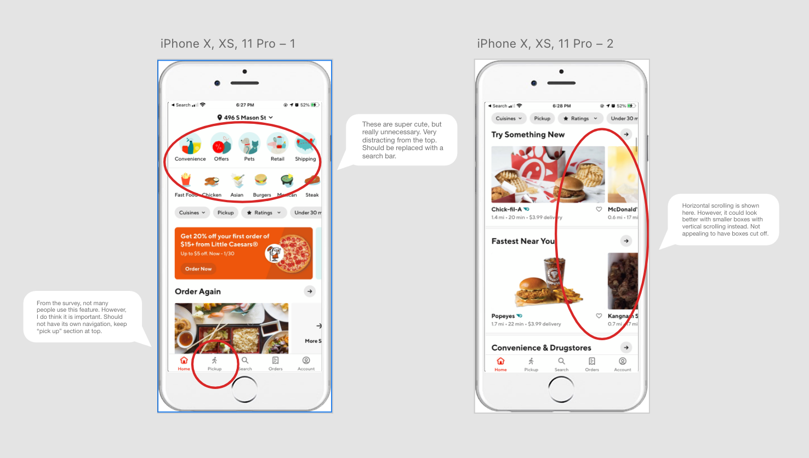
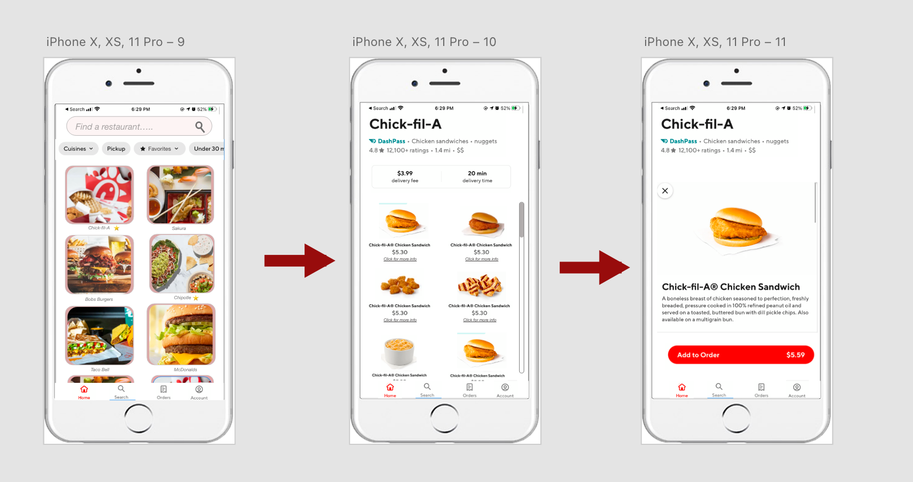

I have never been the best at cooking or making sure what I am eating is even edible. That is why I use services such as doordash and uber eats a lot. I have learned that there are many other reasons why college students also order from these apps. I made made a survey asking many questions about different features of the app and how the user expirence is for that customer. Through this I learned there are many ways that the user expirence can be improved upon.
To better understand the design question, I sent out a survey to many college students to figure out the main pain points of the app. I also wanted to gather data to see if some features can be relocated or possibly even elimniated based on how often they get used. My results are a lot how I expected them to be.

From this data I gathered, you can see that some of the user experience and interface needs to be redesigned. Specifically with the "pick-up" option, search menu, and ordering items other than food. I made sure to add a "N/A" option for those who would not have experienced the certain issue.
You can see from the results that no one that took the survey has every used the pick-up option or has ordered something other than food on the app. I want to redesign the app to still have these options available, but have them take up less space than the current design. Later in this page you will see how I redesigned the interface to increase the user experience in these target areas.
Here is some extra data I pulled from the app store. These are reviews real customers wrote about the app. They write about the user experience design and other various issues with the app. I took these into consideration when while doing my redesigns!
Difficulty locating specifc restaurants - I am redeigning this part by relocating the search bar to be in a more universal spot so it is more intuitive to users as well as adding less horizontal scrolling.
Seeing too many options in the menu section - To fix this pain point I am going to re-organize the lay-out for the menu and clean up the text around each item.
Here I show what the current landing page looks like. You can see that is is crowded up by the icons in the beginning, this is where a search menu should be. You can also see that the restaurants are cut off, this can look better if there was less horizontal scrolling.
Here is what it looks like when you click on a restaurants. You can see that you have to scroll far down to even see the menu. It is blocked by ads, comments, and a "featured menu."

In this redesign you can see I added a search bar to the top of the app to easily find a restaurant. I also made the restaurants in a vertical fashion so the images are not cut off and you can clearly see your options. You can see the stars I added to two of the choices. These are for your favorites so you can find them easier. The last thing I changed is in the navigation bar at the bottom. I removed the pick-up option and left it at the top. This cleans the nav bar up and makes the whole design look cleaner.

Here I show what the current landing page looks like. You can see that is is crowded up by the icons in the beginning, this is where a search menu should be. You can also see that the restaurants are cut off, this can look better if there was less horizontal scrolling.

This is the final user flow of adding an item to your cart from the landing page!
At the end of the day the doordash app has all the right features to be a successful app. However, on the flip side the app is poorly designed and is confusing to customers and could be made more intuitive. Through my user research I found that customers had a hard time locating specific restaurants and ordering items from a menu. To improve these features I cleaned up the interface for the landing page and the menus by simplifying the text and adding more white space. For the landing page, I limited the amount of horizontal scrolling to improve visibility. By implementing these changes the user experience was enhanced and lessen the pain points.